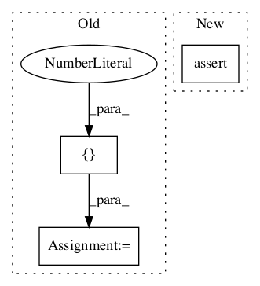

4909765543ff0c96627161ecc75eec6c309dbdce,official/resnet/keras/keras_common_test.py,KerasCommonTests,test_build_stats,#KerasCommonTests#,35

Before Change
eval_output = self._build_eval_output(.56432111, 5.990)
th = keras_common.TimeHistory(128, 100)
th.batch_start_timestamps = [1, 2, 3]
th.batch_end_timestamps = [4, 5, 6]
th.train_finish_time = 12345
stats = keras_common.build_stats(history, eval_output, th)
After Change
self.assertEqual(.56432111, stats["accuracy_top_1"])
self.assertEqual(5.990, stats["eval_loss"])
self.assertEqual(3, stats["step_timestamp_log"][2].timestamp)
self.assertEqual(12345, stats["train_finish_time"])
def test_build_stats_sparse(self):
In pattern: SUPERPATTERN
Frequency: 3
Non-data size: 3
Instances
Project Name: tensorflow/models
Commit Name: 4909765543ff0c96627161ecc75eec6c309dbdce
Time:
Author: null
File Name: official/resnet/keras/keras_common_test.py
Class Name: KerasCommonTests
Method Name: test_build_stats
Project Name: tensorflow/models
Commit Name: 8da4857396fcedb1abd19a08cd4de40d16c7bc50
Time:
Author: null
File Name: research/audioset/yamnet/yamnet_test.py
Class Name: YAMNetTest
Method Name: clip_test
Project Name: tensorflow/agents
Commit Name: b5ae1c6bde39f5130c975992198f1f8ee5200f9a
Time:
Author: null
File Name: tf_agents/policies/q_policy_test.py
Class Name: QPolicyTest
Method Name: testActionWithinBounds